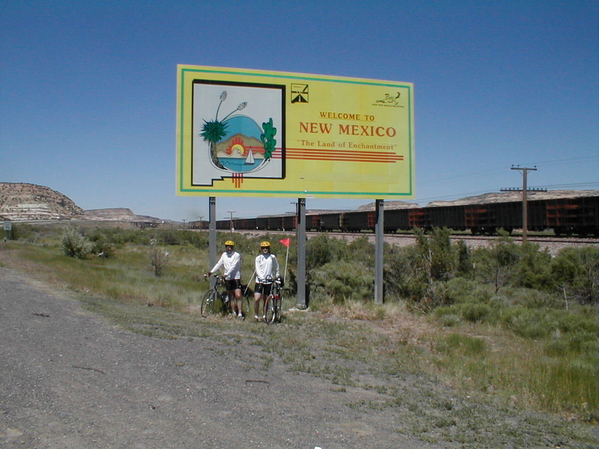

Day 10: May 22, Holbrook, AZ to Gallup, NMPrevious Day - Home - Next Day Photo of the DayDad and I crossing the New Mexico state line. Keegan's LogDay 10: May 22, Holbrook, AZ to Gallup, NM Mileage: 89.76 milesWeather: 70-85 degrees, Sunny and calm Vertical Climb: 2210 feet Riding Time: 5.5 hours We brought out bikes out of the hotel room this morning only to find that we had been hit by yet another night flat, the third in as many days, this time on dad's bike. We never did find the cause, but we were soon underway, about 25 minutes behind the pack. The terrain at the beginning of the ride was, well, boring. It was a moderate desert, no trees or rivers in sight, no mountains on the horizon either. There were some hills though, today had much more climbing than yesterday. We again spent almost the entire day on the side of I-40, adding some to the tedium. Interstate riding does have it's advantages, the wide shoulders usually allow cyclists to ride side-by-side, and the riding tends to be very fast as the roads are straight and ascents are very gradual. The first rest stop was 30 miles into the ride, it was simply a turnoff at the top of an exit ramp. After a few minute's rest, we hopped back onto our bikes and headed back onto I-40 for another stretch. We stopped at Fort Courage, the scene of an old show 'F-Troop', for some lunch. We arrived at the pancake house just after a Greyhound bus, the food was okay but the service was mediocre. The next sag turned out to be only 3 miles down the road, so we only stopped for a few minutes there. The terrain changed after the last rest stop, the flat lands gave way to some rocky cliffs on each side of the road, similar to what we saw in Sedona but without the red color. We also crossed our second state line to move into New Mexico. After sprinkling Pacific sand and taking a few photos, we made the final 17 mile push to bring us to the hotel. We lose an hour tonight due to the time zone change, so it early to bed for us. Tomorrow will be a relatively short day of about 70 miles, but we have two milestones tomorrow: our last interstate riding and the crossing of the continental divide. Phil's LogDay 10: Gallup, NM We knew that today would have some climbing. It amounted to 2230 feet, which isn't so much. But it was a hard day - Keegan and I rode in really whipped. I immediately downed to cans of 7-Up on ice, Keegan went for the root beet. Some of the others thought it wasnt bad, but most seem to think it was tough. Many are now gathered in the motel lounge trading "war stories". Ethel confirmed tha the snake I thought I saw was a rattlesnake, she thought it was dead. I went back to look at it and it snaked off into the desert. My tires were probably thinking "sympathy flat". Speaking of flats, I had a night flat to greet me as I rolled out my bike this AM. Poor Donn had six flats today, five of them because he never found the thorn that was causing them. Tomorrow will be a short day, so I'll promise an "interview" with the Brumleys. But we lose an hour of sleep tonight so I'm anxious to begin. Besides, there's a baseball game on TV. Does anyone know if the Indianapolis Indians have a home game on June 15? That's when the tour passes through Indy, and some non-Americans are interested in attending. Since Keegan has his own newsletter (write to him at klbrown@purdue.edu), I'll sign just me. |
{kind=link}